Last updated: 2022-10-03
Checks: 7 0
Knit directory: DEP_SIMLR/
This reproducible R Markdown analysis was created with workflowr (version 1.6.2). The Checks tab describes the reproducibility checks that were applied when the results were created. The Past versions tab lists the development history.
Great! Since the R Markdown file has been committed to the Git repository, you know the exact version of the code that produced these results.
Great job! The global environment was empty. Objects defined in the global environment can affect the analysis in your R Markdown file in unknown ways. For reproduciblity it’s best to always run the code in an empty environment.
The command set.seed(20221003) was run prior to running the code in the R Markdown file. Setting a seed ensures that any results that rely on randomness, e.g. subsampling or permutations, are reproducible.
Great job! Recording the operating system, R version, and package versions is critical for reproducibility.
Nice! There were no cached chunks for this analysis, so you can be confident that you successfully produced the results during this run.
Great job! Using relative paths to the files within your workflowr project makes it easier to run your code on other machines.
Great! You are using Git for version control. Tracking code development and connecting the code version to the results is critical for reproducibility.
The results in this page were generated with repository version e0d8c2c. See the Past versions tab to see a history of the changes made to the R Markdown and HTML files.
Note that you need to be careful to ensure that all relevant files for the analysis have been committed to Git prior to generating the results (you can use wflow_publish or wflow_git_commit). workflowr only checks the R Markdown file, but you know if there are other scripts or data files that it depends on. Below is the status of the Git repository when the results were generated:
Ignored files:
Ignored: analysis/.DS_Store
Ignored: code/.DS_Store
Untracked files:
Untracked: code/Code_collection/
Untracked: code/R/
Untracked: code/functions/
Untracked: code/simu_220930.R
Note that any generated files, e.g. HTML, png, CSS, etc., are not included in this status report because it is ok for generated content to have uncommitted changes.
These are the previous versions of the repository in which changes were made to the R Markdown (analysis/TCGA_survival_analysis.rmd) and HTML (docs/TCGA_survival_analysis.html) files. If you’ve configured a remote Git repository (see ?wflow_git_remote), click on the hyperlinks in the table below to view the files as they were in that past version.
| File | Version | Author | Date | Message |
|---|---|---|---|---|
| html | 18d5b0e | yuqimiao | 2022-10-03 | Build site. |
| Rmd | 53fd9ff | yuqimiao | 2022-10-03 | update |
In this script, Survival analysis is applied on the kirp and liver cancer data.
KIRP
lihc
The analysis aims to compare the effect from integration, similarity diffusion and partition-level clustering separately. For each data type in each cancer, Euclidean distance and weighted distance are calculated. Weighted distance is based on definition from Ruan et.al(\(d_w(i,j)^2 = \sum_{p=1}^P(x_{ip}-x_{jp})^2w_p, w_p = \frac{-\log_{10}(PV_p)}{\sum_p-\log_{10}(PV_p)}\). The p value is calculated from the univariate logistic regression with the indicator of the cancer as outcome and each single genetic variant as predictor.
From the distance, we further calculated the kernel and diffused kernel (\(K_d = \alpha KP+(1-\alpha)K\), where P is the knn matrix, \(k=\sqrt n\) ) as the similarity matrix reflecting similarity relationship between subjects. and we perform spectral clustering on these similarity measure for each data type in each cancer.
Three methods are implemented for integration: SNF, CIMLR and part-CIMLR. Same kernel lists are fed into the integration methods. We average the kernels in each list and using eigen gap criteria to estimate the total number of clusters in the integrated data. in this way, all 3 integration methods are regarded as having the same number of clusters for the final integraed similarity matrix.
surv_pv = readRDS("./code/Code_collection/TCGA_survival_analysis/surv_pv.rds")
kirp_surv_pv = surv_pv %>% filter(cancer == "kirp")
lihc_surv_pv = surv_pv %>% filter(cancer == "lihc")Result from lihc is not significant among all analysis, in the “number of cluster tunning” section, we further change the number of clusters of lihc to see if any significant result can be observed
tib1 = lihc_surv_pv
knitr::kable(tib1, digits = 32)| cancer | dist_type | type | kernel_type | method | est_nclust | surv_pv |
|---|---|---|---|---|---|---|
| lihc | dist | ge | kernel | single | 2 | 0.3534569 |
| lihc | dist | ge | diff_kernel | single | 2 | 0.3146513 |
| lihc | dist_w | ge | kernel | single | 2 | 0.1229610 |
| lihc | dist_w | ge | diff_kernel | single | 2 | 0.2483852 |
| lihc | dist | me | kernel | single | 2 | 0.3239251 |
| lihc | dist | me | diff_kernel | single | 2 | 0.4251414 |
| lihc | dist_w | me | kernel | single | 2 | 0.3646193 |
| lihc | dist_w | me | diff_kernel | single | 2 | 0.2300546 |
| lihc | dist | integration | kernel | SNF | 2 | 0.6221907 |
| lihc | dist | integration | kernel | part_cimlr | 2 | 0.6189854 |
| lihc | dist | integration | kernel | cimlr | 2 | 0.3860805 |
| lihc | dist | integration | diff_kernel | SNF | 2 | 0.7819822 |
| lihc | dist | integration | diff_kernel | part_cimlr | 2 | 0.6741028 |
| lihc | dist | integration | diff_kernel | cimlr | 2 | 0.2889291 |
| lihc | dist_w | integration | kernel | SNF | 2 | 0.3392436 |
| lihc | dist_w | integration | kernel | part_cimlr | 2 | 0.5674536 |
| lihc | dist_w | integration | kernel | cimlr | 2 | 0.2831193 |
| lihc | dist_w | integration | diff_kernel | SNF | 2 | 0.1323802 |
| lihc | dist_w | integration | diff_kernel | part_cimlr | 2 | 0.8809602 |
| lihc | dist_w | integration | diff_kernel | cimlr | 2 | 0.2324397 |
tib2 = kirp_surv_pv %>% arrange(dist_type, kernel_type)
knitr::kable(tib2, digits = 32)| cancer | dist_type | type | kernel_type | method | est_nclust | surv_pv |
|---|---|---|---|---|---|---|
| kirp | dist | ge | diff_kernel | single | 5 | 1.248888e-09 |
| kirp | dist | me | diff_kernel | single | 3 | 6.722442e-10 |
| kirp | dist | integration | diff_kernel | SNF | 3 | 7.704042e-14 |
| kirp | dist | integration | diff_kernel | part_cimlr | 3 | 4.911162e-21 |
| kirp | dist | integration | diff_kernel | cimlr | 3 | 2.790220e-05 |
| kirp | dist | ge | kernel | single | 5 | 2.618814e-08 |
| kirp | dist | me | kernel | single | 3 | 6.403923e-08 |
| kirp | dist | integration | kernel | SNF | 3 | 7.704042e-14 |
| kirp | dist | integration | kernel | part_cimlr | 3 | 1.043541e-15 |
| kirp | dist | integration | kernel | cimlr | 3 | 9.739944e-08 |
| kirp | dist_w | ge | diff_kernel | single | 2 | 8.642570e-06 |
| kirp | dist_w | me | diff_kernel | single | 3 | 2.940859e-07 |
| kirp | dist_w | integration | diff_kernel | SNF | 2 | 2.042054e-05 |
| kirp | dist_w | integration | diff_kernel | part_cimlr | 2 | 3.005323e-14 |
| kirp | dist_w | integration | diff_kernel | cimlr | 2 | 8.293289e-06 |
| kirp | dist_w | ge | kernel | single | 2 | 5.500565e-06 |
| kirp | dist_w | me | kernel | single | 3 | 2.791599e-06 |
| kirp | dist_w | integration | kernel | SNF | 3 | 7.505977e-12 |
| kirp | dist_w | integration | kernel | part_cimlr | 3 | 2.365982e-14 |
| kirp | dist_w | integration | kernel | cimlr | 3 | 7.741927e-05 |
tib3 = kirp_surv_pv %>% arrange(type, dist_type)
knitr::kable(tib3, digits = 32)| cancer | dist_type | type | kernel_type | method | est_nclust | surv_pv |
|---|---|---|---|---|---|---|
| kirp | dist | ge | kernel | single | 5 | 2.618814e-08 |
| kirp | dist | ge | diff_kernel | single | 5 | 1.248888e-09 |
| kirp | dist_w | ge | kernel | single | 2 | 5.500565e-06 |
| kirp | dist_w | ge | diff_kernel | single | 2 | 8.642570e-06 |
| kirp | dist | integration | kernel | SNF | 3 | 7.704042e-14 |
| kirp | dist | integration | kernel | part_cimlr | 3 | 1.043541e-15 |
| kirp | dist | integration | kernel | cimlr | 3 | 9.739944e-08 |
| kirp | dist | integration | diff_kernel | SNF | 3 | 7.704042e-14 |
| kirp | dist | integration | diff_kernel | part_cimlr | 3 | 4.911162e-21 |
| kirp | dist | integration | diff_kernel | cimlr | 3 | 2.790220e-05 |
| kirp | dist_w | integration | kernel | SNF | 3 | 7.505977e-12 |
| kirp | dist_w | integration | kernel | part_cimlr | 3 | 2.365982e-14 |
| kirp | dist_w | integration | kernel | cimlr | 3 | 7.741927e-05 |
| kirp | dist_w | integration | diff_kernel | SNF | 2 | 2.042054e-05 |
| kirp | dist_w | integration | diff_kernel | part_cimlr | 2 | 3.005323e-14 |
| kirp | dist_w | integration | diff_kernel | cimlr | 2 | 8.293289e-06 |
| kirp | dist | me | kernel | single | 3 | 6.403923e-08 |
| kirp | dist | me | diff_kernel | single | 3 | 6.722442e-10 |
| kirp | dist_w | me | kernel | single | 3 | 2.791599e-06 |
| kirp | dist_w | me | diff_kernel | single | 3 | 2.940859e-07 |
tib4 = kirp_surv_pv %>%
filter(method != "single") %>%
arrange(type, dist_type)
knitr::kable(tib4, digits = 32)| cancer | dist_type | type | kernel_type | method | est_nclust | surv_pv |
|---|---|---|---|---|---|---|
| kirp | dist | integration | kernel | SNF | 3 | 7.704042e-14 |
| kirp | dist | integration | kernel | part_cimlr | 3 | 1.043541e-15 |
| kirp | dist | integration | kernel | cimlr | 3 | 9.739944e-08 |
| kirp | dist | integration | diff_kernel | SNF | 3 | 7.704042e-14 |
| kirp | dist | integration | diff_kernel | part_cimlr | 3 | 4.911162e-21 |
| kirp | dist | integration | diff_kernel | cimlr | 3 | 2.790220e-05 |
| kirp | dist_w | integration | kernel | SNF | 3 | 7.505977e-12 |
| kirp | dist_w | integration | kernel | part_cimlr | 3 | 2.365982e-14 |
| kirp | dist_w | integration | kernel | cimlr | 3 | 7.741927e-05 |
| kirp | dist_w | integration | diff_kernel | SNF | 2 | 2.042054e-05 |
| kirp | dist_w | integration | diff_kernel | part_cimlr | 2 | 3.005323e-14 |
| kirp | dist_w | integration | diff_kernel | cimlr | 2 | 8.293289e-06 |
cluster_dist = readRDS("code/Code_collection/TCGA_survival_analysis/cluster_distribution.rds")
knitr::kable(cluster_dist)| cancer | type | dist_type | kernel_type | method | est_nclust | label | n |
|---|---|---|---|---|---|---|---|
| kirp | ge | dist | kernel | single | 5 | 1 | 34 |
| kirp | ge | dist | kernel | single | 5 | 2 | 23 |
| kirp | ge | dist | kernel | single | 5 | 3 | 26 |
| kirp | ge | dist | kernel | single | 5 | 4 | 30 |
| kirp | ge | dist | kernel | single | 5 | 5 | 24 |
| kirp | ge | dist | diff_kernel | single | 5 | 1 | 35 |
| kirp | ge | dist | diff_kernel | single | 5 | 2 | 25 |
| kirp | ge | dist | diff_kernel | single | 5 | 3 | 22 |
| kirp | ge | dist | diff_kernel | single | 5 | 4 | 26 |
| kirp | ge | dist | diff_kernel | single | 5 | 5 | 29 |
| kirp | ge | dist_w | kernel | single | 2 | 1 | 60 |
| kirp | ge | dist_w | kernel | single | 2 | 2 | 77 |
| kirp | ge | dist_w | diff_kernel | single | 2 | 1 | 60 |
| kirp | ge | dist_w | diff_kernel | single | 2 | 2 | 77 |
| kirp | me | dist | kernel | single | 3 | 1 | 32 |
| kirp | me | dist | kernel | single | 3 | 2 | 75 |
| kirp | me | dist | kernel | single | 3 | 3 | 30 |
| kirp | me | dist | diff_kernel | single | 3 | 1 | 33 |
| kirp | me | dist | diff_kernel | single | 3 | 2 | 28 |
| kirp | me | dist | diff_kernel | single | 3 | 3 | 76 |
| kirp | me | dist_w | kernel | single | 3 | 1 | 36 |
| kirp | me | dist_w | kernel | single | 3 | 2 | 71 |
| kirp | me | dist_w | kernel | single | 3 | 3 | 30 |
| kirp | me | dist_w | diff_kernel | single | 3 | 1 | 37 |
| kirp | me | dist_w | diff_kernel | single | 3 | 2 | 71 |
| kirp | me | dist_w | diff_kernel | single | 3 | 3 | 29 |
| lihc | ge | dist | kernel | single | 2 | 1 | 80 |
| lihc | ge | dist | kernel | single | 2 | 2 | 81 |
| lihc | ge | dist | diff_kernel | single | 2 | 1 | 81 |
| lihc | ge | dist | diff_kernel | single | 2 | 2 | 80 |
| lihc | ge | dist_w | kernel | single | 2 | 1 | 86 |
| lihc | ge | dist_w | kernel | single | 2 | 2 | 75 |
| lihc | ge | dist_w | diff_kernel | single | 2 | 1 | 90 |
| lihc | ge | dist_w | diff_kernel | single | 2 | 2 | 71 |
| lihc | me | dist | kernel | single | 2 | 1 | 90 |
| lihc | me | dist | kernel | single | 2 | 2 | 71 |
| lihc | me | dist | diff_kernel | single | 2 | 1 | 94 |
| lihc | me | dist | diff_kernel | single | 2 | 2 | 67 |
| lihc | me | dist_w | kernel | single | 2 | 1 | 92 |
| lihc | me | dist_w | kernel | single | 2 | 2 | 69 |
| lihc | me | dist_w | diff_kernel | single | 2 | 1 | 96 |
| lihc | me | dist_w | diff_kernel | single | 2 | 2 | 65 |
| kirp | integration | dist | kernel | SNF | 3 | 1 | 60 |
| kirp | integration | dist | kernel | SNF | 3 | 2 | 14 |
| kirp | integration | dist | kernel | SNF | 3 | 3 | 63 |
| kirp | integration | dist | kernel | part_cimlr | 3 | 1 | 72 |
| kirp | integration | dist | kernel | part_cimlr | 3 | 2 | 56 |
| kirp | integration | dist | kernel | part_cimlr | 3 | 3 | 9 |
| kirp | integration | dist | kernel | cimlr | 3 | 1 | 39 |
| kirp | integration | dist | kernel | cimlr | 3 | 2 | 30 |
| kirp | integration | dist | kernel | cimlr | 3 | 3 | 68 |
| kirp | integration | dist | diff_kernel | SNF | 3 | 1 | 59 |
| kirp | integration | dist | diff_kernel | SNF | 3 | 2 | 14 |
| kirp | integration | dist | diff_kernel | SNF | 3 | 3 | 64 |
| kirp | integration | dist | diff_kernel | part_cimlr | 3 | 1 | 11 |
| kirp | integration | dist | diff_kernel | part_cimlr | 3 | 2 | 109 |
| kirp | integration | dist | diff_kernel | part_cimlr | 3 | 3 | 17 |
| kirp | integration | dist | diff_kernel | cimlr | 3 | 1 | 50 |
| kirp | integration | dist | diff_kernel | cimlr | 3 | 2 | 70 |
| kirp | integration | dist | diff_kernel | cimlr | 3 | 3 | 17 |
| kirp | integration | dist_w | kernel | SNF | 3 | 1 | 57 |
| kirp | integration | dist_w | kernel | SNF | 3 | 2 | 64 |
| kirp | integration | dist_w | kernel | SNF | 3 | 3 | 16 |
| kirp | integration | dist_w | kernel | part_cimlr | 3 | 1 | 110 |
| kirp | integration | dist_w | kernel | part_cimlr | 3 | 2 | 9 |
| kirp | integration | dist_w | kernel | part_cimlr | 3 | 3 | 18 |
| kirp | integration | dist_w | kernel | cimlr | 3 | 1 | 50 |
| kirp | integration | dist_w | kernel | cimlr | 3 | 2 | 27 |
| kirp | integration | dist_w | kernel | cimlr | 3 | 3 | 60 |
| kirp | integration | dist_w | diff_kernel | SNF | 2 | 1 | 62 |
| kirp | integration | dist_w | diff_kernel | SNF | 2 | 2 | 75 |
| kirp | integration | dist_w | diff_kernel | part_cimlr | 2 | 1 | 124 |
| kirp | integration | dist_w | diff_kernel | part_cimlr | 2 | 2 | 13 |
| kirp | integration | dist_w | diff_kernel | cimlr | 2 | 1 | 59 |
| kirp | integration | dist_w | diff_kernel | cimlr | 2 | 2 | 78 |
| lihc | integration | dist | kernel | SNF | 2 | 1 | 84 |
| lihc | integration | dist | kernel | SNF | 2 | 2 | 77 |
| lihc | integration | dist | kernel | part_cimlr | 2 | 1 | 7 |
| lihc | integration | dist | kernel | part_cimlr | 2 | 2 | 154 |
| lihc | integration | dist | kernel | cimlr | 2 | 1 | 99 |
| lihc | integration | dist | kernel | cimlr | 2 | 2 | 62 |
| lihc | integration | dist | diff_kernel | SNF | 2 | 1 | 86 |
| lihc | integration | dist | diff_kernel | SNF | 2 | 2 | 75 |
| lihc | integration | dist | diff_kernel | part_cimlr | 2 | 1 | 23 |
| lihc | integration | dist | diff_kernel | part_cimlr | 2 | 2 | 138 |
| lihc | integration | dist | diff_kernel | cimlr | 2 | 1 | 101 |
| lihc | integration | dist | diff_kernel | cimlr | 2 | 2 | 60 |
| lihc | integration | dist_w | kernel | SNF | 2 | 1 | 94 |
| lihc | integration | dist_w | kernel | SNF | 2 | 2 | 67 |
| lihc | integration | dist_w | kernel | part_cimlr | 2 | 1 | 131 |
| lihc | integration | dist_w | kernel | part_cimlr | 2 | 2 | 30 |
| lihc | integration | dist_w | kernel | cimlr | 2 | 1 | 101 |
| lihc | integration | dist_w | kernel | cimlr | 2 | 2 | 60 |
| lihc | integration | dist_w | diff_kernel | SNF | 2 | 1 | 74 |
| lihc | integration | dist_w | diff_kernel | SNF | 2 | 2 | 87 |
| lihc | integration | dist_w | diff_kernel | part_cimlr | 2 | 1 | 62 |
| lihc | integration | dist_w | diff_kernel | part_cimlr | 2 | 2 | 99 |
| lihc | integration | dist_w | diff_kernel | cimlr | 2 | 1 | 104 |
| lihc | integration | dist_w | diff_kernel | cimlr | 2 | 2 | 57 |
2022-09-27
Read in
res_tib_integ = readRDS("/Volumes/sw2206/yuqi/data_20220308/output/benchmark_res/res_tib_integ.rds")
res_tib_single = readRDS("/Volumes/sw2206/yuqi/data_20220308/output/benchmark_res/res_tib_single.rds")
obj_tib = readRDS("/Volumes/sw2206/yuqi/data_20220308/output/cancer_object/obj_tib.rds")Since the weighted distance may not be accurate enough, all following result using original distance
Integrated
kirp_surv_tib = res_tib_integ %>%
filter(dist_type == "dist" & cancer == "kirp") %>%
dplyr::select(cancer, method, kernel_type,surv_tib) %>%
unnest(surv_tib)
ggsurvplot_facet(survfit(Surv(days_to_death, censoring)~cluster,
data = kirp_surv_tib),
data = kirp_surv_tib,
facet.by = c("kernel_type", "method"))+
ggtitle("Survival curve for kirp using original distance")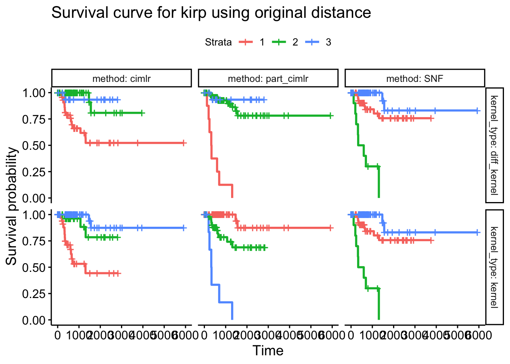
| Version | Author | Date |
|---|---|---|
| 18d5b0e | yuqimiao | 2022-10-03 |
# ggsave("code/Code_collection/TCGA_survival_analysis/kirp_dist_surv.png",width = 10, height = 6)This plot shows the survival curv from the integrated similarity facet by kernel type and integrating method
ge
kirp_surv_tib_ge = res_tib_single %>%
filter(cancer == "kirp" & dist_type == "dist" & type == "ge") %>%
dplyr::select(cancer, kernel_type,surv_tib) %>%
unnest(surv_tib)
surv_ge = ggsurvplot_facet(survfit(Surv(days_to_death, censoring) ~ cluster, data = kirp_surv_tib_ge),
kirp_surv_tib_ge,
facet.by = c("kernel_type"))+
ggtitle("Survival curve for kirp using original ge distance")
surv_ge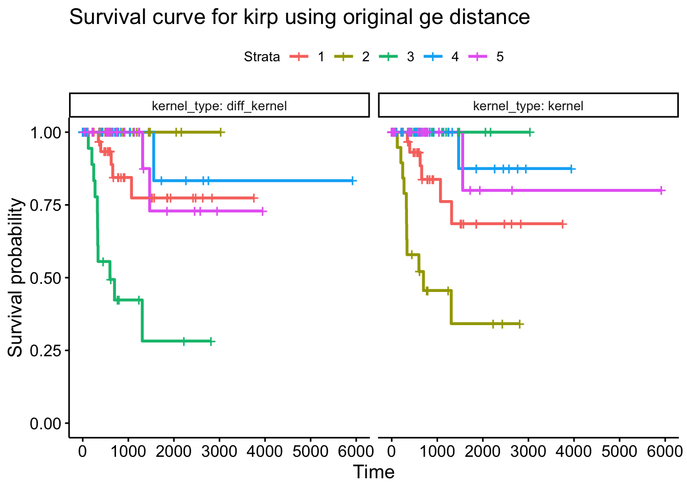
| Version | Author | Date |
|---|---|---|
| 18d5b0e | yuqimiao | 2022-10-03 |
This plot shows the survival curv from the gene expression similarity, facet by kernel type.
me
kirp_surv_tib_me = res_tib_single %>%
filter(cancer == "kirp" & dist_type == "dist" & type == "me") %>%
dplyr::select(cancer, kernel_type,surv_tib) %>%
unnest(surv_tib)
surv_me = ggsurvplot_facet(survfit(Surv(days_to_death, censoring)~cluster,
data = kirp_surv_tib_me),
data = kirp_surv_tib_me,
facet.by = c("kernel_type"))+
ggtitle("Survival curve for kirp using original me distance")
surv_me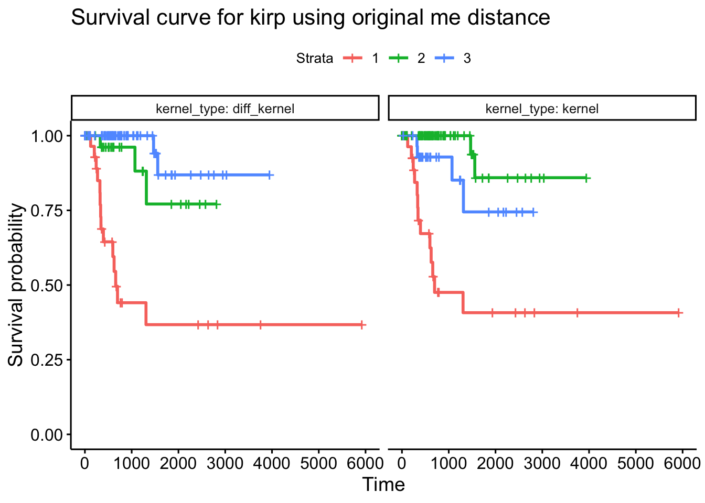
| Version | Author | Date |
|---|---|---|
| 18d5b0e | yuqimiao | 2022-10-03 |
This plot shows the survival curv from the methylation similarity, facet by kernel type.
# pull out the res_list for kirp ge
res_kirp_ge = (obj_tib %>% filter(cancer == "kirp" &type == "ge" & dist_type == "dist" ) %>% pull(object))[[1]]
names(res_kirp_ge)[1] "distance" "kernel" "diff_kernel"
[4] "est_nclust_kernel" "est_nclust_diff_kernel" "cluster_kernel"
[7] "cluster_diff_kernel" # est_n_clust didn't change after diffusion
res_kirp_ge$est_nclust_kernel$`Eigen-gap best`
[1] 5
$`Eigen-gap 2nd best`
[1] 2
$`Rotation cost best`
[1] 5
$`Rotation cost 2nd best`
[1] 4res_kirp_ge$est_nclust_diff_kernel$`Eigen-gap best`
[1] 5
$`Eigen-gap 2nd best`
[1] 2
$`Rotation cost best`
[1] 5
$`Rotation cost 2nd best`
[1] 4# table for the cluster distribution
table(res_kirp_ge$cluster_kernel)
1 2 3 4 5
34 23 26 30 24 table(res_kirp_ge$cluster_diff_kernel)
1 2 3 4 5
35 25 22 26 29 # cluster nmi
compare(res_kirp_ge$cluster_kernel, res_kirp_ge$cluster_diff_kernel,"nmi")[1] 0.8771321function for neighborhood check
# input: 2 similarity mat, kernel, diff kernel and the subject id which we want to look at
# output: sorted kernel/diff_kernel vec for the subject, and the plot showing the neighbor difference
neighbor_difference = function(kernel,diff_kernel,subj_id){
n = nrow(kernel)
k = floor(sqrt(n))
par(mfrow = c(2,1))
plot(kernel[subj_id,], ylim = c(0.7,1))
plot(diff_kernel[subj_id,], ylim = c(0.7,1))
sort_kernel_vec = sort(kernel[as.character(subj_id),], index.return = T, decreasing = T)
sort_diff_kernel_vec = sort(diff_kernel[as.character(subj_id),], index.return = T, decreasing = T)
par(mfrow = c(1,2))
plot(x = 1:k, y = sort_kernel_vec$x[1:k],xaxt = "n", ylab = "kernel", xlab = "index", ylim = c(0.7,1), main = paste("subject", subj_id, "neighbor change"))
axis(1, at = 1:k,labels = as.character(colnames(kernel)[sort_kernel_vec$ix[1:k]]),las = 2)
abline(h=0.85, col = "lightgray")
plot(x = 1:k, y = sort_diff_kernel_vec$x[1:k],xaxt = "n", ylab = "diff_kernel", xlab = "index", ylim = c(0.7,1))
axis(1, at = 1:k,labels = as.character(colnames(kernel)[sort_diff_kernel_vec$ix[1:k]]),las = 2)
abline(h=0.85, col = "lightgray")
return(list(sort_kernel_vec = sort_kernel_vec,
sort_diff_kernel_vec = sort_diff_kernel_vec))
}See plot for 2 subjects as example
tmp = neighbor_difference(kernel = res_kirp_ge$kernel,
diff_kernel = res_kirp_ge$diff_kernel,
subj_id = "7287")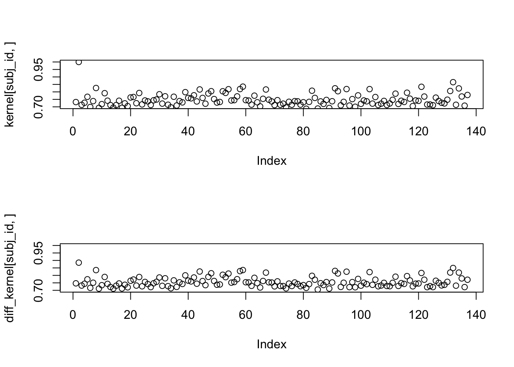
| Version | Author | Date |
|---|---|---|
| 18d5b0e | yuqimiao | 2022-10-03 |
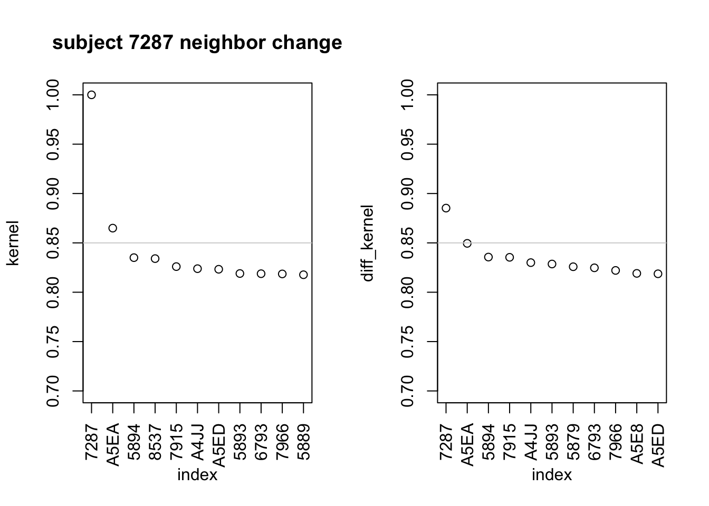
| Version | Author | Date |
|---|---|---|
| 18d5b0e | yuqimiao | 2022-10-03 |
From this neighborhood comparison, we can see that diffusion makes the neighbor similarity measures less variable, and also change the diagonal similarity measure as the weighted combination of the neighbor similarity;
The neighbor ranks will also change
calc mds plot
distance = res_kirp_ge$distance
kernel = res_kirp_ge$kernel
diff_kernel = res_kirp_ge$diff_kernel
cluster_kernel = res_kirp_ge$cluster_kernel
cluster_diff_kernel = res_kirp_ge$cluster_diff_kernel
# subset distance measure
colnames(distance) = rownames(distance) = str_sub(colnames(distance), -4,-1)
distance = distance[names(cluster_kernel), names(cluster_kernel)]
distance = dist_kernels(diff_kernel)
mds_kd = as_tibble(cmdscale(distance, 2))%>%
mutate(kernel = cluster_kernel,
diff_kernel = cluster_diff_kernel) %>%
pivot_longer(cols = c(kernel, diff_kernel),
names_to = "kernel_type",
values_to = "cluster") %>%
ggplot(aes(x = V1, y = V2, color = factor(cluster))) +
geom_point()+
facet_grid(.~kernel_type)+
labs(title = "MDS plot using diffused kernel distance",
subtitle = "labeled by the cluster from kernel and diff_kernel separately",
color = "cluster label")Warning: The `x` argument of `as_tibble.matrix()` must have unique column names if `.name_repair` is omitted as of tibble 2.0.0.
Using compatibility `.name_repair`.mds_kd|surv_ge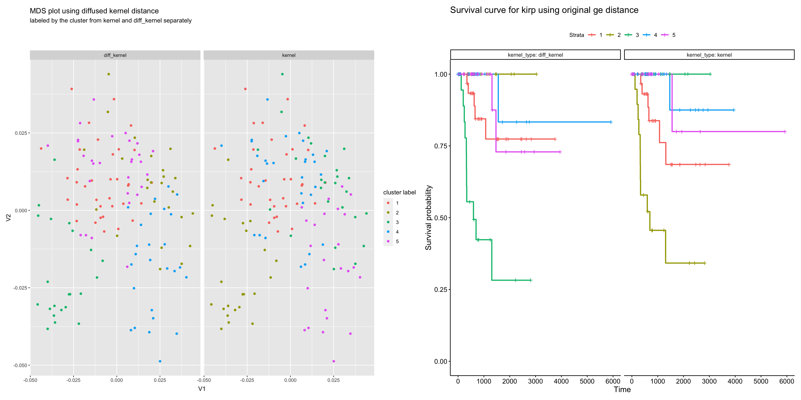
| Version | Author | Date |
|---|---|---|
| 18d5b0e | yuqimiao | 2022-10-03 |
plot by kernel distance to show clearer low-dimensional structure
The color of the 2 plots are corresponding; The diffusion kernel clearly separates cluster 3,4, which are the 2 extreme clusters in the population. This indicatesthe fact that diffusion captures more global, more dense and clear cluster structure in the similarity network
intersect(which(res_kirp_ge$cluster_diff_kernel == 3), c(which(res_kirp_ge$cluster_kernel == 1),which(res_kirp_ge$cluster_kernel == 2))) [1] 2 8 30 39 42 44 48 52 54 58 59 67 91 92 95 103 112 116 121
[20] 131 132 134length(which(res_kirp_ge$cluster_diff_kernel == 3))[1] 22Diffusion kernel separate out the most extreme cases as 3/4
eig_kernel_GL = eigen(normalized_GL(kernel))
eig_diff_kernel_GL = eigen(normalized_GL(diff_kernel))
eig_kernel_GL$values[(nrow(kernel)-6):nrow(kernel)][1] 9.938145e-01 9.927089e-01 9.855136e-01 9.819899e-01 9.791574e-01
[6] 9.739022e-01 1.110223e-16eig_diff_kernel_GL$values[(nrow(kernel)-6):nrow(kernel)][1] 9.962285e-01 9.952259e-01 9.889565e-01 9.864638e-01 9.827657e-01
[6] 9.771426e-01 -6.661338e-16smaller eigen value is increasing, focus on larger structure
2022-09-28
id_cur = "6846"
# obj_tib read in the KIRP exploration
# extract kernel and diff kernel for ge
# pull out the res_list for kirp ge
res_kirp_ge = (obj_tib %>% filter(cancer == "kirp" &type == "ge" & dist_type == "dist" ) %>% pull(object))[[1]]
res_kirp_me = (obj_tib %>% filter(cancer == "kirp" &type == "me" & dist_type == "dist" ) %>% pull(object))[[1]]
kernel_ge = res_kirp_ge$kernel
diff_kernel_ge = res_kirp_ge$diff_kernel
kernel_me = res_kirp_me$kernel
diff_kernel_me = res_kirp_me$diff_kernelNeighborhood membership in expression
nb_ge = neighbor_difference(kernel_ge, diff_kernel_ge, subj_id = id_cur)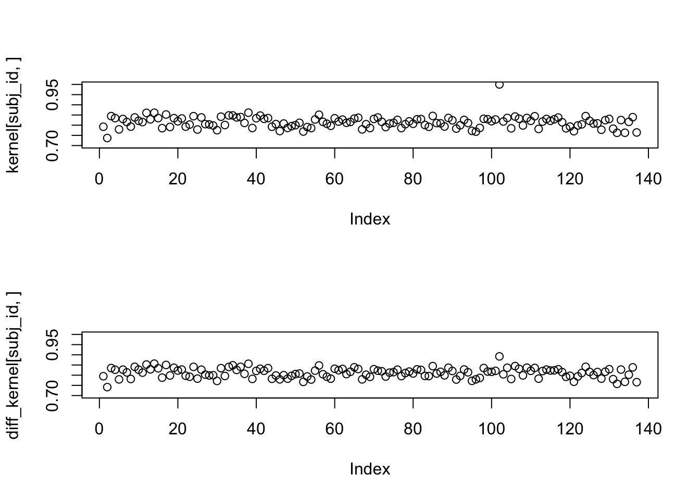
| Version | Author | Date |
|---|---|---|
| 18d5b0e | yuqimiao | 2022-10-03 |
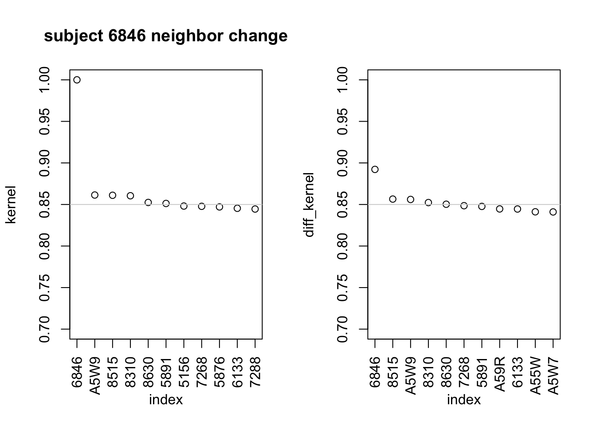
| Version | Author | Date |
|---|---|---|
| 18d5b0e | yuqimiao | 2022-10-03 |
Neighborhood membership in methylation
nb_me = neighbor_difference(kernel_me, diff_kernel_me, subj_id = id_cur)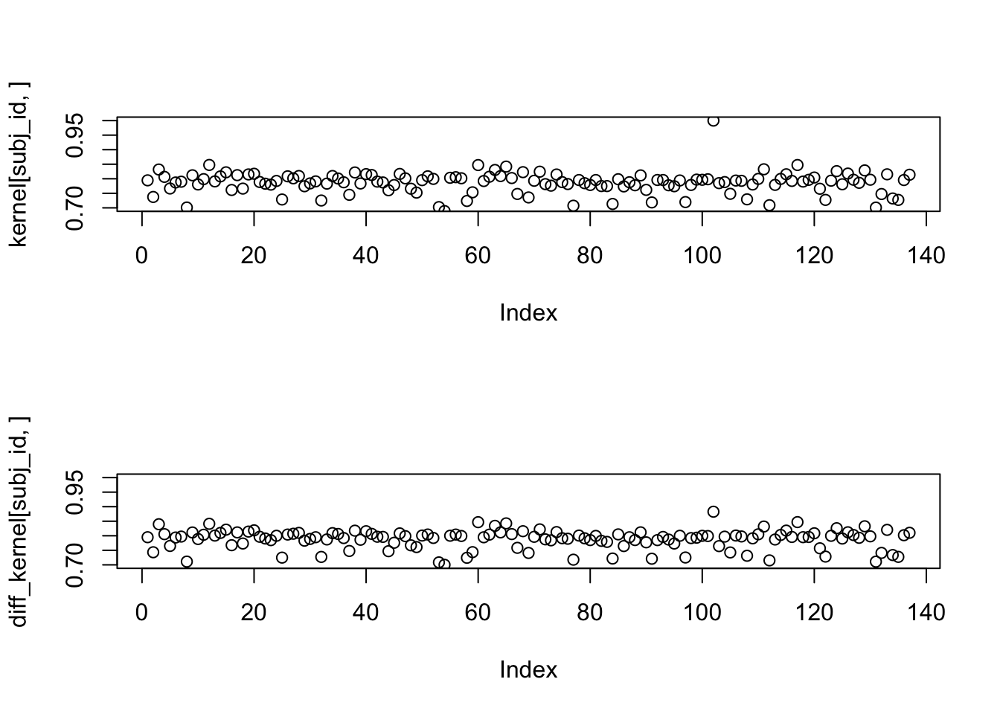
| Version | Author | Date |
|---|---|---|
| 18d5b0e | yuqimiao | 2022-10-03 |
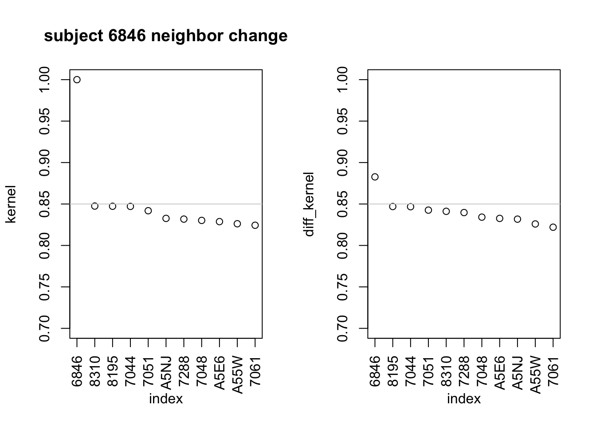
| Version | Author | Date |
|---|---|---|
| 18d5b0e | yuqimiao | 2022-10-03 |
# ge
nb_ge$sort_kernel_vec$x[1:11] 6846 A5W9 8515 8310 8630 5891 5156 7268
1.0000000 0.8613851 0.8610742 0.8604980 0.8524367 0.8512200 0.8481016 0.8477901
5876 6133 7288
0.8470764 0.8454200 0.8445218 nb_ge$sort_diff_kernel_vec$x[1:11] 6846 8515 A5W9 8310 8630 7268 5891 A59R
0.8922132 0.8565073 0.8560457 0.8522924 0.8502972 0.8485381 0.8476850 0.8446567
6133 A55W A5W7
0.8445595 0.8411782 0.8410308 # me
nb_me$sort_kernel_vec$x[1:11] 6846 8310 8195 7044 7051 A5NJ 7288 7048
1.0000000 0.8475024 0.8472862 0.8471165 0.8418808 0.8326385 0.8317925 0.8302014
A5E6 A55W 7061
0.8287525 0.8261772 0.8243765 nb_me$sort_diff_kernel_vec$x[1:11] 6846 8195 7044 7051 8310 7288 7048 A5E6
0.8827232 0.8469597 0.8467426 0.8426171 0.8411741 0.8396802 0.8341499 0.8326273
A5NJ A55W 7061
0.8317379 0.8259286 0.8219988 Common neighbors of 6846 in both ge and me
# original neighb of ge/me matrix intersection
intersect(names(nb_ge$sort_kernel_vec$x[1:11]),names(nb_me$sort_kernel_vec$x[1:11]))[1] "6846" "8310" "7288"Only subject 8310 and 7288 are both included in the neighbors in gene expression and methylation data
Histogram of days to death
hist(kirp_surv_tib_ge %>% filter(kernel_type=="kernel") %>% pull(days_to_death), decreasing = T, xlab = "days to death")[1:5]Warning in plot.window(xlim, ylim, "", ...): "decreasing" is not a graphical
parameterWarning in title(main = main, sub = sub, xlab = xlab, ylab = ylab, ...):
"decreasing" is not a graphical parameterWarning in axis(1, ...): "decreasing" is not a graphical parameterWarning in axis(2, ...): "decreasing" is not a graphical parameter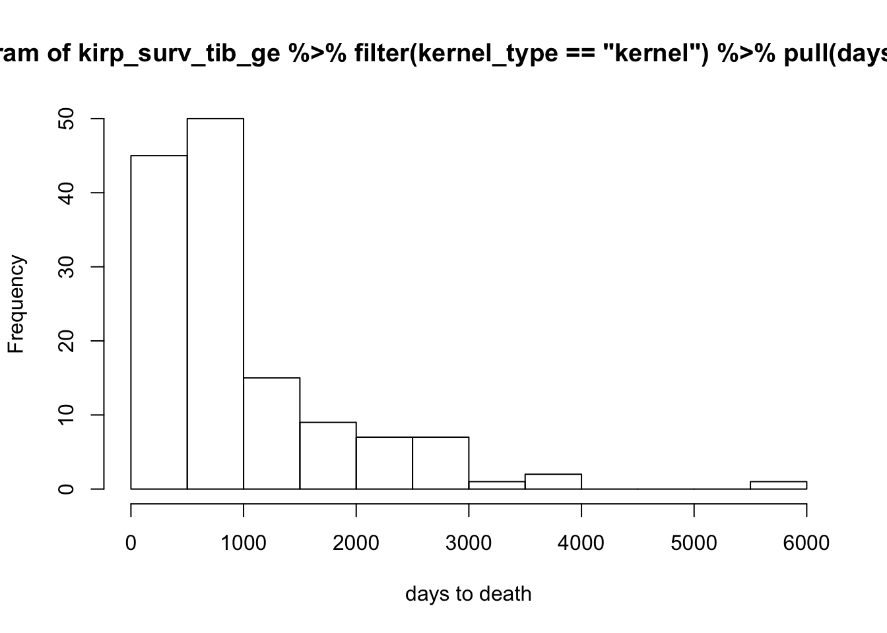
| Version | Author | Date |
|---|---|---|
| 18d5b0e | yuqimiao | 2022-10-03 |
$breaks
[1] 0 500 1000 1500 2000 2500 3000 3500 4000 4500 5000 5500 6000
$counts
[1] 45 50 15 9 7 7 1 2 0 0 0 1
$density
[1] 6.569343e-04 7.299270e-04 2.189781e-04 1.313869e-04 1.021898e-04
[6] 1.021898e-04 1.459854e-05 2.919708e-05 0.000000e+00 0.000000e+00
[11] 0.000000e+00 1.459854e-05
$mids
[1] 250 750 1250 1750 2250 2750 3250 3750 4250 4750 5250 5750
$xname
[1] "kirp_surv_tib_ge %>% filter(kernel_type == \"kernel\") %>% pull(days_to_death)"From above plot, we can see that subject 6846 has an extremely long follow up period, this could indicate 6846 to be an outlier of the population;
# input:
# output:
mds_plot = function(distance,
kernel,
diff_kernel,
cluster_kernel,
cluster_diff_kernel,
target_label){
colnames(distance) = rownames(distance) = str_sub(colnames(distance), -4,-1)
distance = distance[names(cluster_kernel), names(cluster_kernel)]
distance = dist_kernels(diff_kernel)
mds_kd = as_tibble(cmdscale(distance, 2))%>%
mutate(kernel = cluster_kernel,
diff_kernel = cluster_diff_kernel) %>%
pivot_longer(cols = c(kernel, diff_kernel),
names_to = "kernel_type",
values_to = "cluster") %>%
arrange(kernel_type) %>%
ggplot(aes(x = V1, y = V2, color = factor(cluster), label = rep(target_label,2))) +
geom_point()+
geom_text(size = 2)+
facet_grid(.~kernel_type)+
labs(title = "MDS plot using diffused kernel distance",
subtitle = "labeled by the cluster from kernel and diff_kernel separately",
color = "cluster label")
return(mds_kd)
}mds+surv, ge/me
target_label = rownames(kernel)
for(i in 1:length(target_label)){
target_label[i] = ifelse(target_label[i] %in% names(nb_me$sort_kernel_vec$x[1:11]),
target_label[i], 0)
}
mds_me = mds_plot(distance = res_kirp_me$distance,
kernel = res_kirp_me$kernel,
diff_kernel = res_kirp_me$diff_kernel,
cluster_kernel = res_kirp_me$cluster_kernel,
cluster_diff_kernel = res_kirp_me$cluster_diff_kernel,
target_label = target_label)
mds_ge = mds_plot(distance = res_kirp_ge$distance,
kernel = res_kirp_ge$kernel,
diff_kernel = res_kirp_ge$diff_kernel,
cluster_kernel = res_kirp_ge$cluster_kernel,
cluster_diff_kernel = res_kirp_ge$cluster_diff_kernel,
target_label = target_label)(mds_me|mds_ge)/
(surv_me|surv_ge)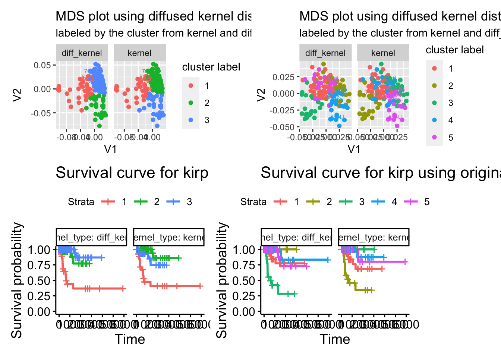
| Version | Author | Date |
|---|---|---|
| 18d5b0e | yuqimiao | 2022-10-03 |
mds+surv, integrated
kirp_surv_tib_part = kirp_surv_tib %>%
filter(method == "part_cimlr")
kirp_res_tib_integ_part = res_tib_integ %>%
filter(cancer =="kirp" & dist_type == "dist" & method == "part_cimlr")
mds_part = mds_plot(distance = res_kirp_ge$distance,
kernel = kirp_res_tib_integ_part$similarity[[1]],
diff_kernel = kirp_res_tib_integ_part$similarity[[2]],
cluster_kernel = kirp_res_tib_integ_part$cluster[[1]],
cluster_diff_kernel =kirp_res_tib_integ_part$cluster[[2]],
target_label = target_label)
surv_part = ggsurvplot_facet(survfit(Surv(days_to_death, censoring)~cluster,
data = kirp_surv_tib_part),
data = kirp_surv_tib_part,
facet.by = c("kernel_type", "method"))+
ggtitle("Survival curve for kirp using original distance")
mds_part/surv_part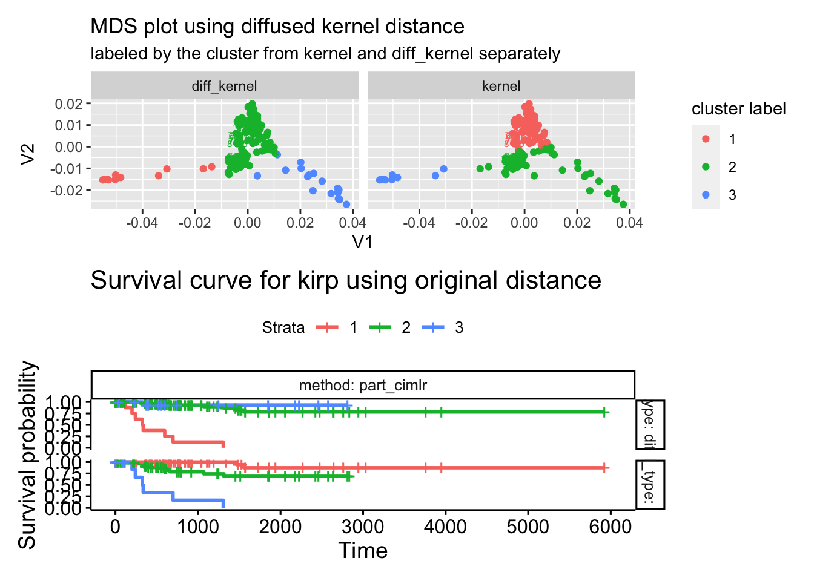
| Version | Author | Date |
|---|---|---|
| 18d5b0e | yuqimiao | 2022-10-03 |
Read in, generated from analysis.r
res_tib_integ_nc = readRDS("/Volumes/sw2206/yuqi/data_20220308/output/benchmark_res/res_tib_integ_nc.rds")
surv_pv_integ_nc = readRDS("/Volumes/sw2206/yuqi/data_20220308/output/benchmark_res/surv_pv_integ_nc.rds")<0.05 combination
surv_pv_integ_nc %>%
filter(cancer == "lihc") %>%
unnest(surv_pv)%>%
filter(surv_pv<0.05) %>%
arrange(surv_pv)# A tibble: 16 × 7
cancer dist_type type kernel_type method n_cluster surv_pv
<chr> <chr> <chr> <chr> <chr> <int> <dbl>
1 lihc dist integration kernel part_cimlr 6 9.54e-10
2 lihc dist_w integration diff_kernel SNF 3 3.96e- 3
3 lihc dist_w integration kernel SNF 4 6.48e- 3
4 lihc dist_w integration kernel part_cimlr 6 6.78e- 3
5 lihc dist_w integration kernel SNF 3 1.11e- 2
6 lihc dist integration kernel cimlr 3 1.29e- 2
7 lihc dist_w integration diff_kernel SNF 4 1.73e- 2
8 lihc dist integration kernel cimlr 4 2.28e- 2
9 lihc dist integration diff_kernel SNF 3 2.91e- 2
10 lihc dist_w integration kernel SNF 5 3.29e- 2
11 lihc dist integration diff_kernel cimlr 3 4.06e- 2
12 lihc dist integration diff_kernel SNF 4 4.55e- 2
13 lihc dist integration diff_kernel SNF 6 4.65e- 2
14 lihc dist_w integration kernel cimlr 4 4.73e- 2
15 lihc dist integration kernel cimlr 6 4.90e- 2
16 lihc dist integration kernel SNF 3 4.95e- 2lihc survival analysis, nc = 6
lihc_surv_tib_nc6 = res_tib_integ_nc %>%
filter(cancer == "lihc" & n_cluster == 6 & dist_type == "dist") %>%
dplyr::select(cancer, kernel_type,method, surv_tib) %>%
unnest(surv_tib)
surv_6 = ggsurvplot_facet(survfit(Surv(days_to_death, censoring)~cluster,
data = lihc_surv_tib_nc6),
data = lihc_surv_tib_nc6,
facet.by = c("kernel_type", "method"))+
ggtitle("Survival curve for lihc using integrated original distance, nc = 6")
surv_6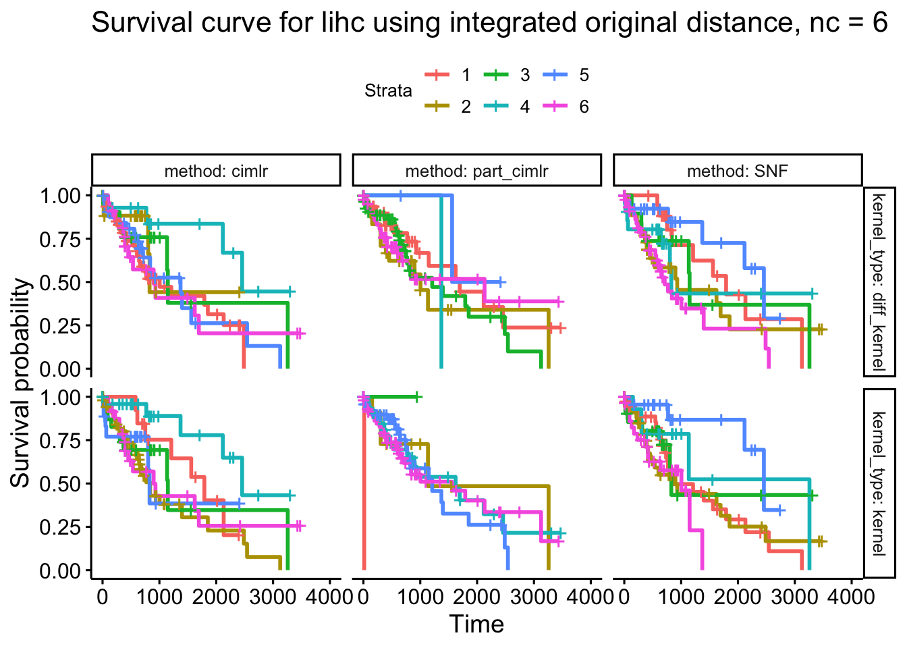
| Version | Author | Date |
|---|---|---|
| 18d5b0e | yuqimiao | 2022-10-03 |
Extreme case for surv_6
part_cim_kernel = lihc_surv_tib_nc6 %>%
filter(method == "part_cimlr" & kernel_type == "kernel")
table(part_cim_kernel$cluster)
1 2 3 4 5 6
1 12 1 33 51 63 Potentially, when extracting partition information from the single data, only the major variation is captured instead of the small, blur variation.
tidy and add res_tib, surv_tib, cluster_tib into the worklog with header details
sessionInfo()R version 3.6.2 (2019-12-12)
Platform: x86_64-apple-darwin15.6.0 (64-bit)
Running under: macOS 10.16
Matrix products: default
BLAS: /Library/Frameworks/R.framework/Versions/3.6/Resources/lib/libRblas.0.dylib
LAPACK: /Library/Frameworks/R.framework/Versions/3.6/Resources/lib/libRlapack.dylib
locale:
[1] en_US.UTF-8/en_US.UTF-8/en_US.UTF-8/C/en_US.UTF-8/en_US.UTF-8
attached base packages:
[1] stats graphics grDevices utils datasets methods base
other attached packages:
[1] patchwork_1.0.0 igraph_1.2.6 survminer_0.4.9 ggpubr_0.4.0
[5] MASS_7.3-51.5 flexsurv_1.1.1 survival_3.1-11 SNFtool_2.3.0
[9] forcats_0.5.0 stringr_1.4.0 dplyr_1.0.7 purrr_0.3.4
[13] readr_1.3.1 tidyr_1.1.3 tibble_3.1.3 ggplot2_3.3.5
[17] tidyverse_1.3.0 workflowr_1.6.2
loaded via a namespace (and not attached):
[1] fs_1.5.0 lubridate_1.7.8 RColorBrewer_1.1-2 httr_1.4.2
[5] rprojroot_2.0.2 tools_3.6.2 backports_1.2.1 utf8_1.2.2
[9] R6_2.5.0 DBI_1.1.0 colorspace_2.0-2 withr_2.4.2
[13] gridExtra_2.3 tidyselect_1.1.1 curl_4.3 compiler_3.6.2
[17] git2r_0.26.1 cli_3.0.1 rvest_0.3.5 xml2_1.3.2
[21] labeling_0.4.2 scales_1.1.1 survMisc_0.5.5 mvtnorm_1.1-2
[25] quadprog_1.5-8 digest_0.6.27 foreign_0.8-76 rmarkdown_2.1
[29] rio_0.5.16 pkgconfig_2.0.3 htmltools_0.5.1.1 prettyGraphs_2.1.6
[33] highr_0.8 dbplyr_1.4.2 rlang_0.4.11 readxl_1.3.1
[37] rstudioapi_0.13 farver_2.1.0 generics_0.1.0 zoo_1.8-9
[41] jsonlite_1.7.2 zip_2.0.4 car_3.0-7 magrittr_2.0.1
[45] heatmap.plus_1.3 Matrix_1.2-18 Rcpp_1.0.8.3 munsell_0.5.0
[49] fansi_0.5.0 abind_1.4-5 lifecycle_1.0.0 stringi_1.5.3
[53] whisker_0.4 yaml_2.2.1 carData_3.0-3 mstate_0.2.12
[57] grid_3.6.2 promises_1.2.0.1 crayon_1.4.1 lattice_0.20-41
[61] haven_2.3.1 splines_3.6.2 hms_1.1.0 knitr_1.32
[65] pillar_1.6.2 ggsignif_0.6.0 reprex_0.3.0 glue_1.4.2
[69] evaluate_0.14 alluvial_0.1-2 data.table_1.13.6 modelr_0.1.6
[73] deSolve_1.28 vctrs_0.3.8 httpuv_1.5.5 cellranger_1.1.0
[77] gtable_0.3.0 muhaz_1.2.6.1 km.ci_0.5-2 ExPosition_2.8.23
[81] assertthat_0.2.1 openxlsx_4.1.4 xfun_0.22 xtable_1.8-4
[85] broom_0.7.6 rstatix_0.7.0 later_1.1.0.1 KMsurv_0.1-5
[89] ellipsis_0.3.2